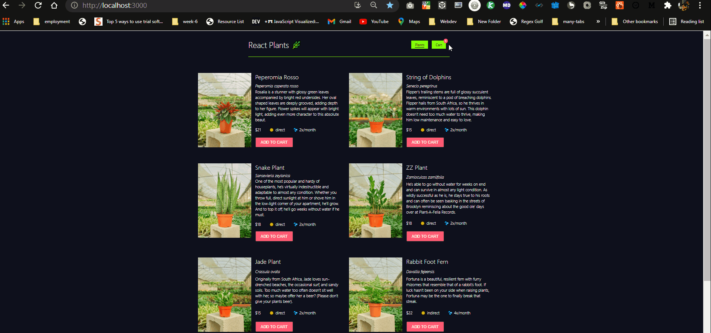
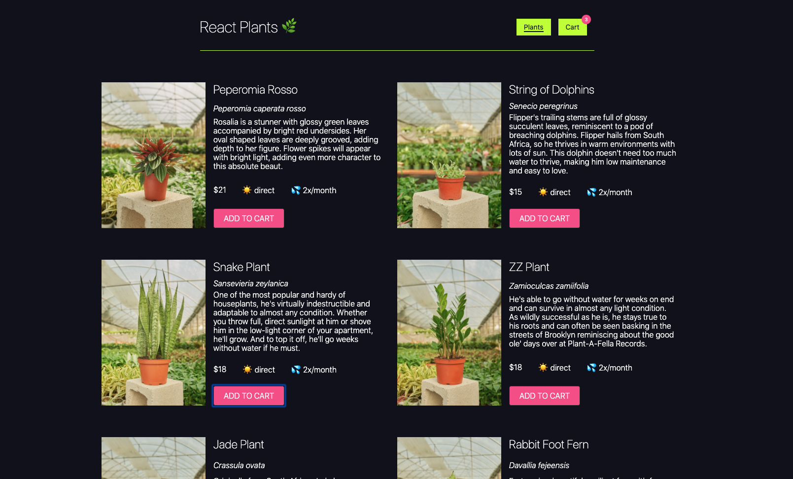
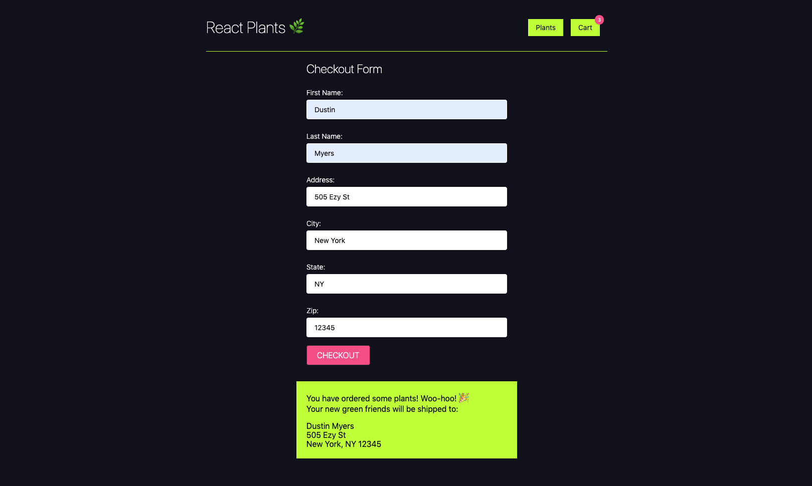
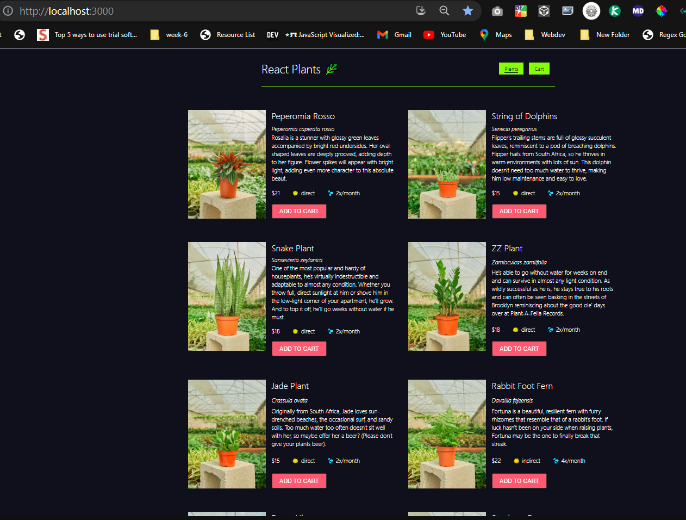

Read these instructions carefully. Understand exactly what is expected before starting this Sprint Challenge.
This challenge allows you to practice the concepts and techniques learned over the past sprint and apply them in a concrete project. This sprint explored some advanced React topics ⚛️.
During this sprint, you studied:
class component,
custom hook, and
write tests for your app.
In this project, you will add class components to your a basic ecommerce site that allow you to request product data from a server and render that data. You will also implement the ablitity to add products to a shopping cart.
In meeting the minimum viable product (MVP) specifications listed below, your project should look like the solution examples below:


You will also need to build the two tests in the
CheckoutForm.test.js file and make sure they are testing
what the test title says they are.
<firstName-lastName>.
<firstName-lastName> branch, committing changes
regularly.
<firstName-lastName>.
npm install to install your
dependencies.
npm start to start your
application.
npm test to start
your test runner. (It is recommended you do this only when actually
building tests - any change in your app will make the tests run, and
that could eat up your computer power)
<firstName-lastName>.
git commit --allow-empty -m "first commit" &&
git push
Your finished project must include all of the following requirements.
import React, { Component } from "react"; import axios from "axios"; export default class PlantList extends Component { // add state with a property called "plants" - initialize as an empty array constructor() { super(); this.state = { plants: [], }; } // when the component mounts: // - fetch data from the server endpoint - http://localhost:3333/plants // - set the returned plants array to this.state.plants componentDidMount() { axios .get("http://localhost:3333/plants") .then((res) => { this.setState({ plants: res.data, }); }) .catch((err) => { console.log(err); }); }

Display a list of the plants from the server. This should be done in
the class component PlantList.
Unlike other projects, the local server used here can not be
accessed through the browser. It is started automatically and
without the need for starting a server.js file. Feel free to ignore
any messages related to MSW or mock service workers. For this and
the rest of your sprint challenges, test the functioning of the
server directly through your axios calls.
In the
PlantList class component, fetch data from the server
you now have running - the data can be fetched from
http://localhost:3333/plants.
Set the
data to a state property called this.state.plants.
The render function is already built and styled. Once the data is on the state, you will see the list of plants, and you will have the functionality to add a plant to the cart.
Nothing needs to be done here. You will have to navigate to the cart page in your app so you can go to the checkout form for the next step.
The form is working, but it is currently controlled by local stateful logic. We want to control this form with a custom hook.
useForm, and use it in your
CheckoutForm component to control the form's stateful logic.
src/components/CheckoutForm.test.js is correctly
called.
Notes:
package.json file except to install
extra libraries.
IMPORTANT: Only work on stretch goals after completing your MVP!
When completing these goals, make sure to use a
new branch to ensure your MVP code is not
overwritten. You can branch off main by executing
git checkout -b stretch. When you are fully sure your
stretch code is ready for feedback, merge your stretch code with main
using git checkout main and
git merge stretch.
After finishing your required elements, you can push your work further. These goals may or may not be things you have learned in this module but they build on the material you just studied. Time allowing, stretch your limits and see if you can deliver on the following optional goals:
ShoppingCart component and test that it
displays plants there (you'll need some mock plant data for the
test, and then you can pass that data in as a prop when you call
render and render the component - see the example
below)
const plants = {{}, {}, {}} // with each object being a mock plant test("displays plants in cart", () => { const { getByText } = render(<ShoppingCart cart={plants} />) ... })
http://localhost:3333/plants: returns an array of
objects of the following form
{ name: "Peperomia Rosso", id: 143, scientificName: "Peperomia caperata rosso", difficulty: "easy", light: "direct", img: "https://cdn.shopify.com/s/files/1/2781/9558/products/PEPEROMIA_ROSSO-1_800x.png?v=1587156590", sizes: ["small"], watering: 2, description: "Rosalia is a stunner with glossy green leaves accompanied by bright red undersides. Her oval shaped leaves are deeply grooved, adding depth to her figure. Flower spikes will appear with bright light, adding even more character to this absolute beaut.", price: 21, }
Be prepared to demonstrate your understanding of this week's
concepts by answering questions on the following topics. Add your
answers to the questions within
interview_answers.md file. These will not be counted as a
part of your sprint score but will be helpful for preparing you for
your endorsement interview, and enhancing overall understanding.
A componentWillMount is called after the constructor function call including super and initial state value.
componentDidMount is called after the component is mounted on the screen
Arrange - The stage where inputs and targets are set. Arrange sets set up the test cases
Act - Act on the behavior of the target
Assert - What are your expected outcomes. this is even defined by expect in the test code syntax.